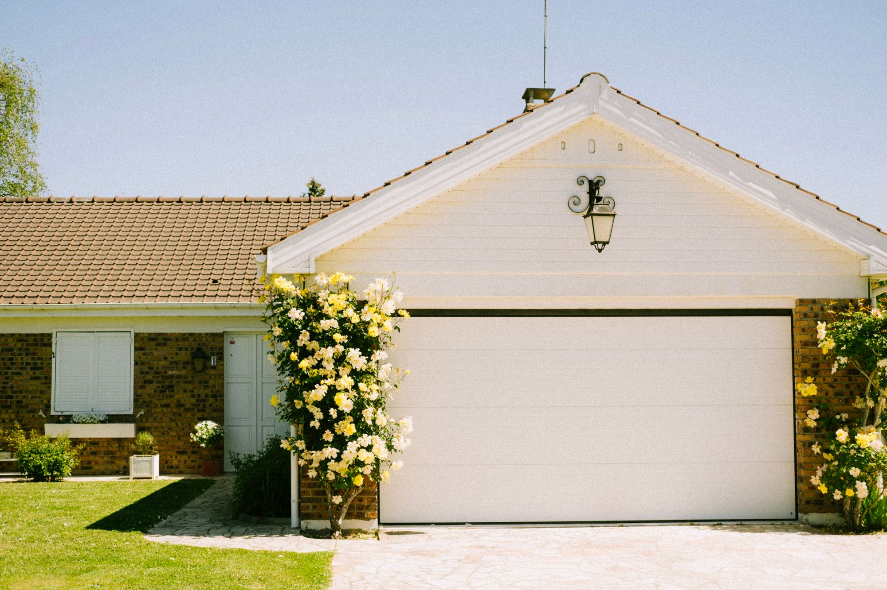
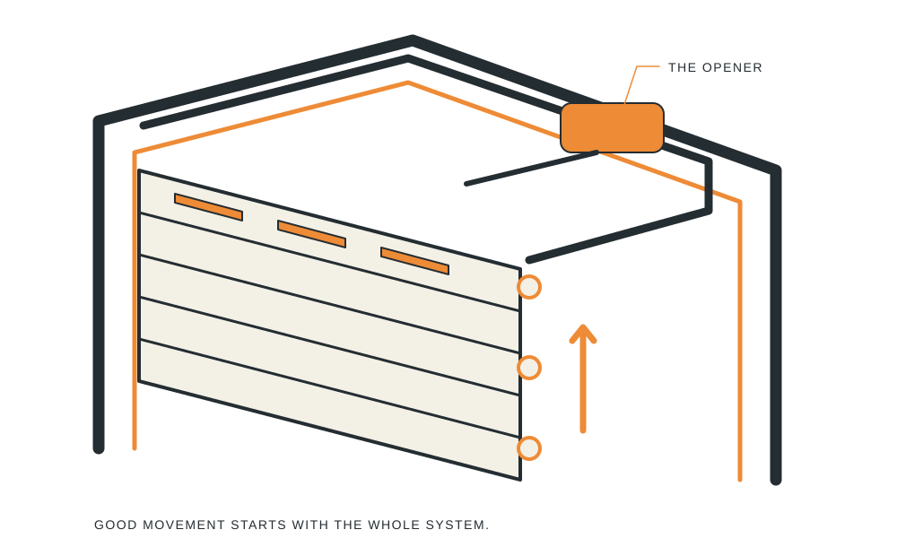
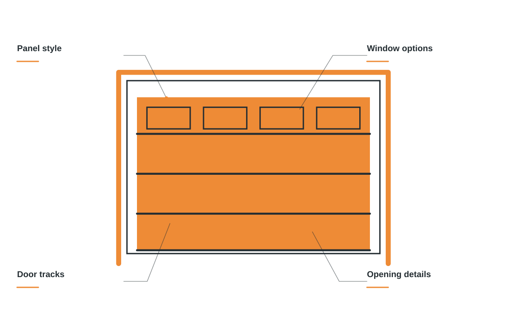
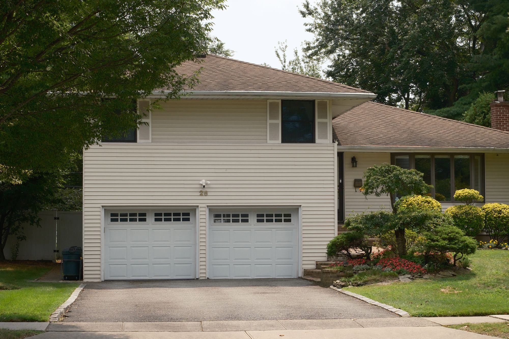
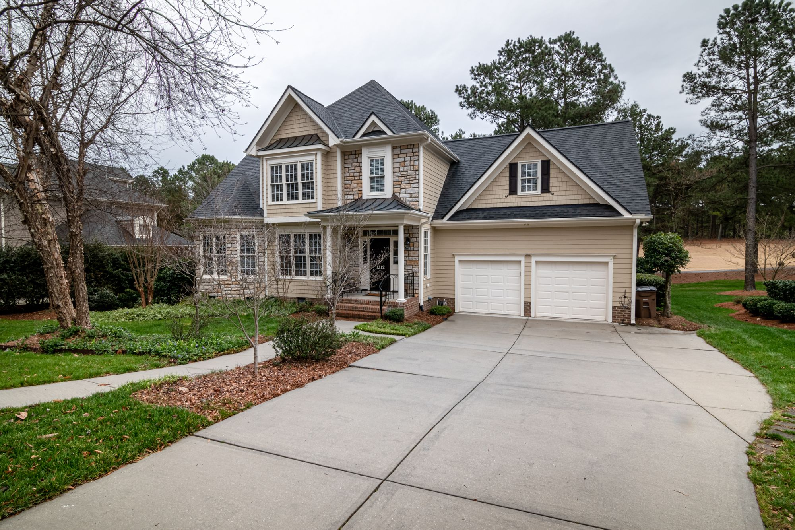
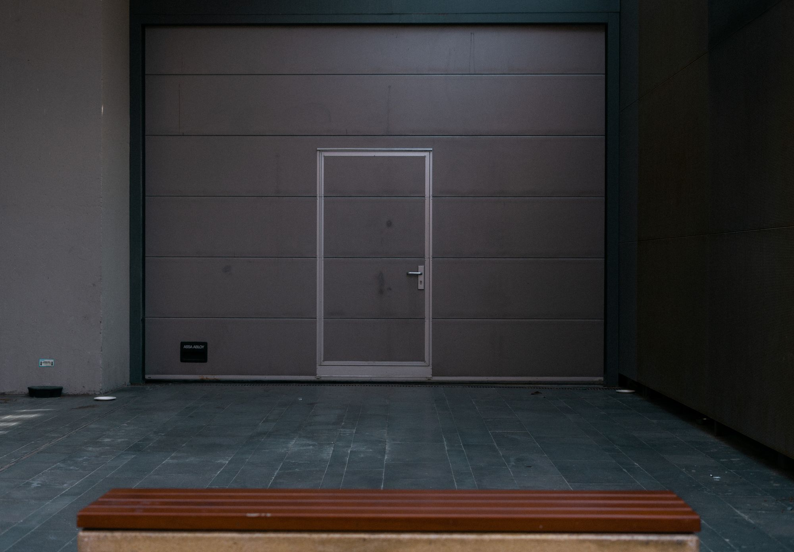

Door replacement
Find a style, finish, and configuration that fits your home.
Garage door repair and replacement, planned around the way you come home.
Explore your next door ↗

Find a style, finish, and configuration that fits your home.
Inspection and repair for the moving parts behind the door.
Make daily access more convenient and predictable.
Give rough operation and unexpected noise the attention they need.
A useful garage door brings together everyday operation and the view from the curb. Start with the door you have, or the entrance you want next.

LIFTLINE / THE DETAILS MATTERTell us what the door is doing and what concerns you. We can discuss an appropriate service visit.
Panel style, windows, color, and the wider architecture help shape a replacement conversation.
Review the opening, equipment, access, and features you want considered in the proposed work.

Noise, uneven movement, or a door that won’t open? We look at the complete system and explain the repair options before the work starts.


A repair, an opener, or a whole new look.
Talk through the system, style, and scope.
Get the details agreed before work begins.
When you get in touch, a little context goes a long way. These are the details that help us start a useful conversation about your garage doors project.
Tell us what you have in mind ↗Tell us about the current door so the conversation starts with your situation.
A few details about style and material help us understand what you need.
Share opening and access when you get in touch, including photos where useful.
Let us know about daily use so the proposed scope reflects your priorities.
Often, but the cause needs to be checked. Rollers, hinges, alignment, and other components can affect operation.
Garage door springs are under significant tension. Keep clear of damaged parts and have a qualified professional assess the door.
Yes. We can discuss style, materials, insulation, and the way you use the space.